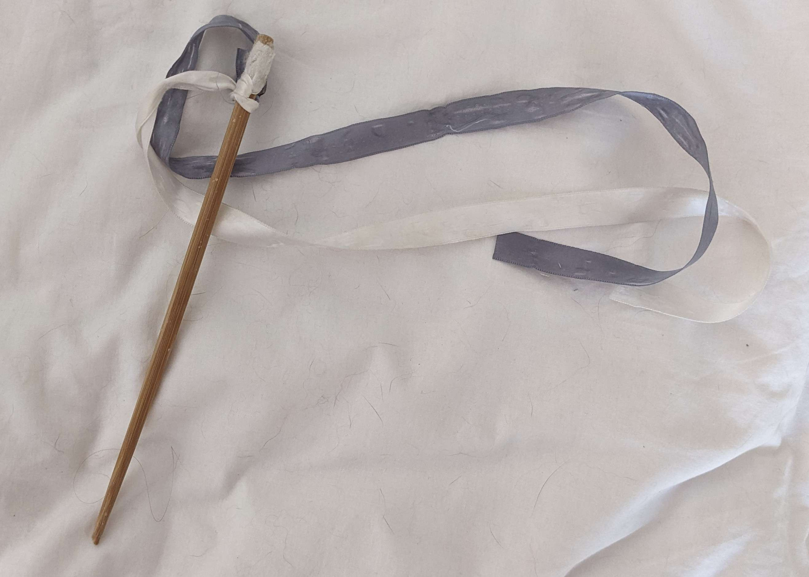
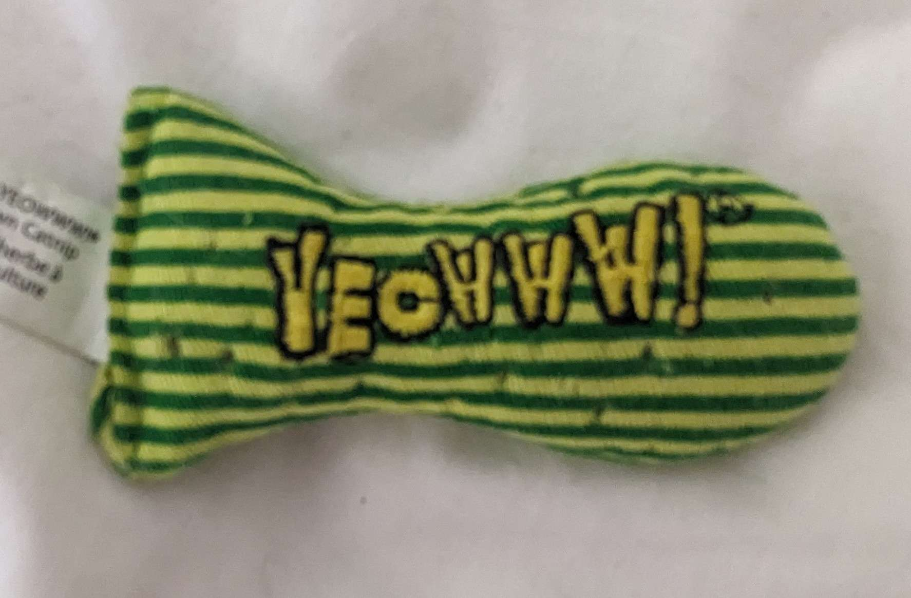
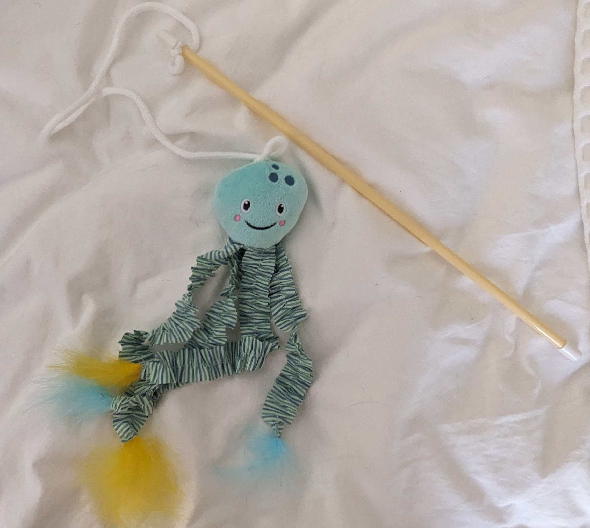
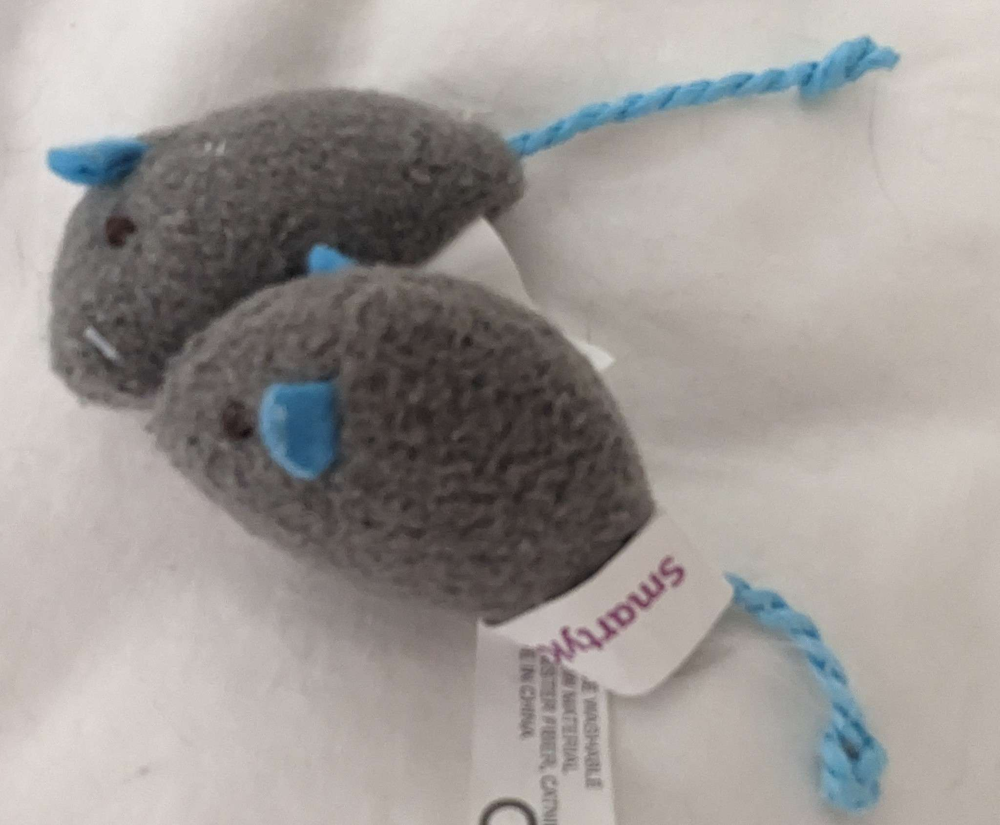

Thank you for taking care of Cora! Here's everything you need to know about her. Oh! and I love love love photos, so don't hesitate to send me updates or photos. Specifics about my room (how the lights work, how to use my projector, etc) can be found here. Also, call or text anytime if you have questions or need anything! 949-370-1987
Food & Water Things
Cora’s food is under the bedside table. She gets two heaping scoops per day (scooper is inside the food bin). I usually feed her one scoop in the morning and one scoop before bed so it doesn’t get stale, but you are more than welcome to give her the two scoops all at once. If there is any remaining food in the bowl, I usually pour it back into the food bin before putting a new scoop in her bowl.
Cora’s treats are inside the bedside table. Feel free to give her as many treats as you want. Lately she’s been loving the “catnip and chill” treats. There is also wet food in the bedside table that she rarely gets but loves. You can give her some while you're taking care of her if you want. Only give her half a can at a time in addition to her kibble, and give her the other half of the can the next day.
Cora's water is in the bowl on the shelf by the window. It gets dust and/or hair in it, so I typically replace the water every 1-2 days. There is also a gravity water bowl on the floor (next to the chair) just in case.
Litter Box
- I typically clean the litter box twice a week, but if you’re taking care of Cora for less than a week, just clean it whenever you feel like it needs it. If it's not stinky the she’ll be fine if I just clean it when I get home.
- Extra cat litter is in my closet.
- The litter scooper is inside the trashcan on the shelf on the desk in the living room.
Favorite Toys
- ribbons on a stick 
- green and yellow fish 
- octopus on a stick 
- little catnip filled mice 
Favorite Hiding Spots
- Under the chair (in the back and inside the chair cover).
- In my closet on top of the drawers on the right side, or under the clothes on the left side.
- Under the bed either on top of the black suitcase (near foot of the bed on the side near the closet) or on top of my backpacking backpack (near the wall on the side near the closet)
Other favorites
- Cora's favorite blankets are the blue throw and the wool tartan throw. Both are either folded on the bed or the chair or hanging on the leaning shelf at the foot of the bed. Please do not wash the wool throw.
- She loves her window seat. (shelf by the window)
- Cora also loves to hang out on the chair (especially if the blue blanket is folded on it). Also, if you sit on the chair for a bit, she might jump up and lay on your lap for snuggles!
- She also loves to jump up on the bed after I've made it in the morning and usually wants to play.
- There is a little mat filled with catnip rolled up in the bedside table. I keep it in the plastic when not in use to try to make it stay as fresh as possible. I've only put it out for her a couple of times but she loves it!
Social calls and Play dates
Cora is separated from the other cats by the baby gate at my bedroom door because she and Binx have had their share of problems. I do think it’s nice for Cora to socialize and she and Chewy are friends, so he is allowed into my room to hang out (but please put Cora’s food away before letting him in). Also, Cora is absolutely allowed out of my room to explore or hang out, but only when Binx is either locked in Bella’s room or on the patio for now. I'm trying to convince Cora that it is safe to come out of my room, so I don't want any scuffles if/when she leaves the room.